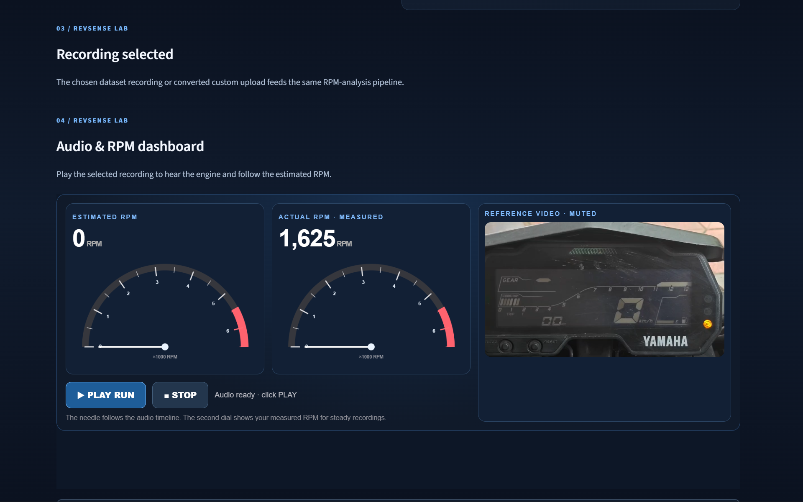
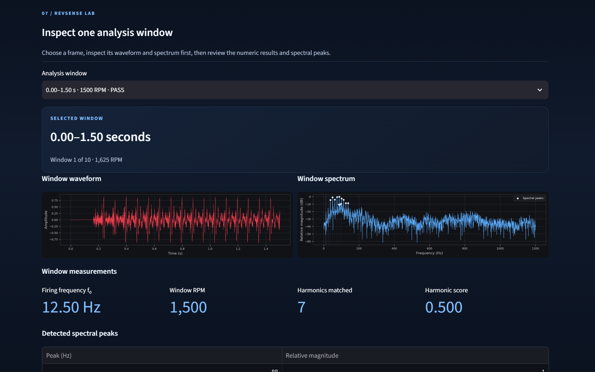
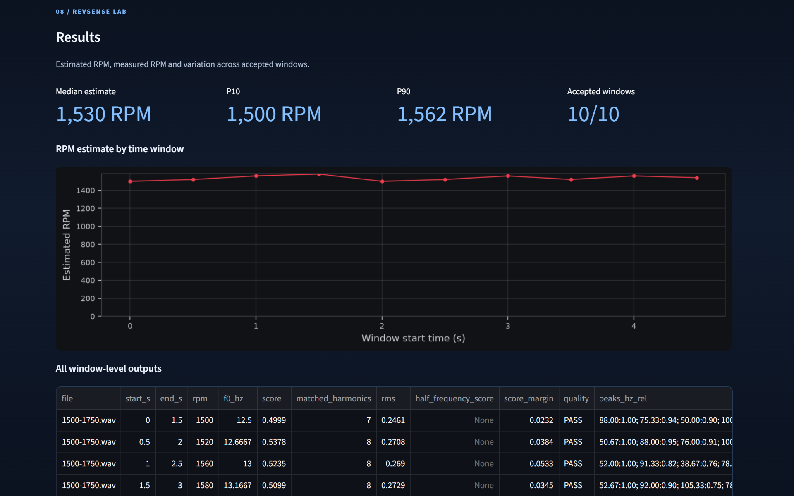
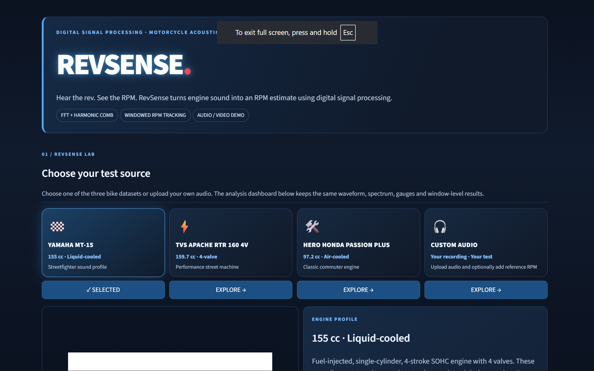
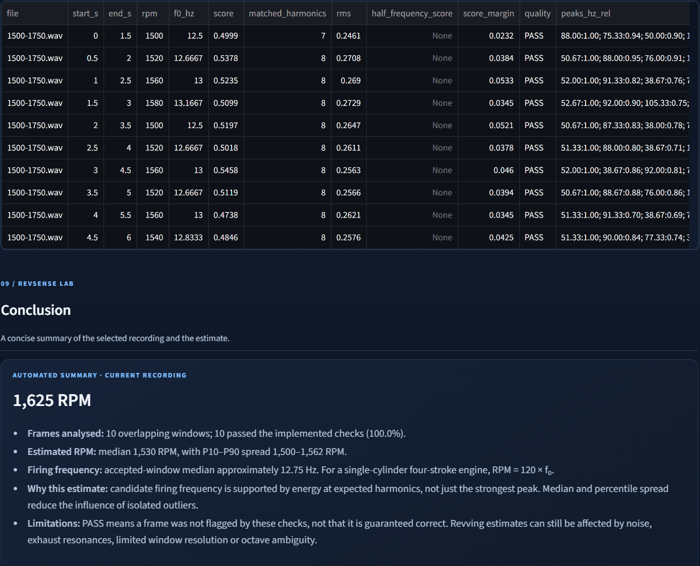

RevSense
Acoustic Motorcycle RPM Estimation Using Digital Signal Processing
Non-contact rotational speed extraction via Fast Fourier Transform and harmonic-comb spectral analysis.
Project Team
Anurag Ajay • Karthik P G • P R Sooryanarayan • Sivadev S • Sweta Ganguly
Non-Contact Engine Speed Estimation
Motivation
- • Traditional RPM meters require physical sensors or ECU wiring.
- • Exhaust and engine sounds inherently carry periodic rotational signatures.
- • Enables software-based, non-contact frequency analysis.
Challenges & Scope
- • Harmonic Dominance: Overtone peaks often eclipse fundamentals.
- • Octave Ambiguity: Naive peak detection causes doubled RPM errors.
- • Scope: Analytical diagnostic tool, not a factory tachometer replacement.
Core Project Goals
Signal Acquisition
Support multi-bike datasets (Yamaha MT-15, Apache 160, Passion Plus) and custom WAV uploads.
DSP & Harmonic Analysis
Apply windowed FFT and harmonic-comb scoring to extract fundamental firing frequency \(f_0\).
Validation & Dashboard
Track steady/revving states, visualise trajectories, and compare against tachometer reference RPM.
Prior Research & Theoretical Basis
Non-Contact Speed Measurement
Demonstrated that acoustic and vibration signals carry periodic engine rotation signatures.
Audio-Based RPM Estimation
Investigated rotational speed estimation from recorded engine audio and harmonic complexity.
Discrete-Time Signal Processing
Establishes DFT/FFT properties and Hann windowing for spectral leakage suppression.
End-to-End Processing Pipeline
Reference RPM enters solely at the final comparison/validation stage, not as a required input for estimation.
DSP & Harmonic-Comb Estimation
Signal Preparation & FFT
• Mono conversion: \(x_{\text{mono}}[n] = \frac{x_L[n] + x_R[n]}{2}\)
• DC removal: \(x_{\text{zm}}[n] = x[n] - \mu\)
• Hann window: \(w[n] = 0.5\left(1 - \cos\left(\frac{2\pi n}{N-1}\right)\right)\)
• FFT spectrum: \(X[k] = \sum_{n=0}^{N-1} y[n] e^{-j 2\pi kn / N}\)
Harmonic-Comb Scoring & RPM Law
• Harmonic weight: \(w_h = \frac{1}{h^{0.65}}\)
• Combined score: \(S(f_0) = \frac{\sum w_h A_h}{\sum w_h}\)
• 4-Stroke RPM Law: \(\text{RPM} = 120 \cdot f_0\)
• Prevents octave doubling (e.g., locking onto \(2f_0\)).
Streamlit Dashboard & Dataset Selection

Loading from assets/dashboard.png
Supported Datasets:
- Yamaha MT-15 (Steady & Revving)
- TVS Apache RTR 160 4V (Idle, Rev, 5000 RPM)
- Hero Honda Passion Plus (Idle & Revving)
- Custom Audio Upload (.WAV)
Signal Spectra & Revving Trajectories

assets/spectrum.png

assets/revving.png
Steady-RPM Validation & Accuracy Metrics
| Measured | Estimated | Error | Error (%) |
|---|---|---|---|
| 1625 RPM | 1530 | 95 | 5.85% |
| 2250 RPM | 2120 | 130 | 5.78% |
| 3200 RPM | 3140 | 60 | 1.88% |
| 4000 RPM | 4080 | 80 | 2.00% |
| 5000 RPM ★ | 5040 | 40 | 0.80% |
MAPE
3.26%
MAE
81 RPM
RMSE
86.63
Pass Rate
100%
Summary & Next Steps
Conclusion
- • Feasibility proven: Non-contact DSP achieved 3.26% MAPE.
- • Dual-mode flexibility handles steady and revving sweeps.
- • Transparent UI makes spectra and harmonic scores inspectable.
Future Scope
- • Validate with larger labelled datasets across bike models.
- • Implement real-time live microphone input mode.
- • Explore robust noise reduction and mobile deployment.
Key Literature & Foundation
[1] X. Shan, L. Tang, H. Wen, R. Martinek, and J. Smulko
"Analysis of Vibration and Acoustic Signals for Noncontact Measurement of Engine Rotation Speed," Sensors, vol. 20, no. 3, 2020.
[2] C. Fosalau, G. Maties, and C. Zet
"Engine rotational speed estimation using audio recordings and machine learning algorithms," Proc. 25th IMEKO TC4 Symp., 2022.
[3] M. H. Mohd Ghazali and W. Rahiman
"Vibration Analysis for Machine Monitoring and Diagnosis: A Systematic Review," Shock and Vibration, 2021.
RevSense Website — Main Interface
A look at the website interface, dataset controls, and RPM estimation workflow.

Image file: assets/website-home.png — replace with your own website screenshot.
RevSense Website — Analysis & Results
Show the FFT spectrum, harmonic-comb analysis, RPM output, or validation dashboard.

Image file: assets/website-analysis.png — replace with your second website screenshot.
THANK YOU
RevSense Project Presentation